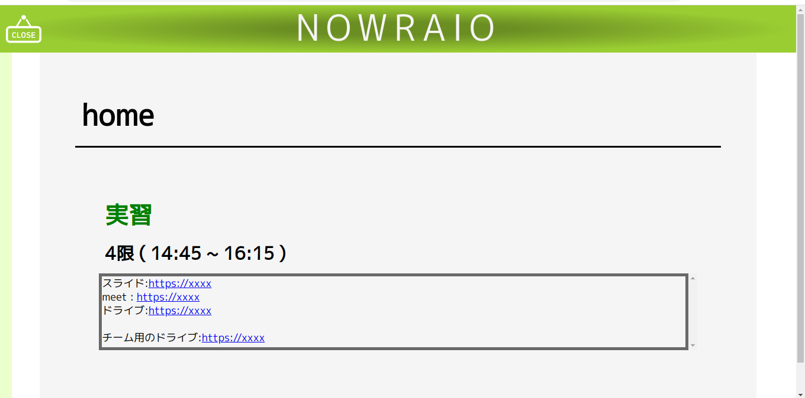

NOWRAIO

時間割管理用のwebアプリです。
時間割を登録するとHOMEのページにその日の残りの授業が表示されます。
授業で使うページのリンクを登録することで素早く授業の準備をすることができます。
使用言語:python3
フレームワーク:Django
時間割を登録するとHOMEのページにその日の残りの授業が表示されます。
授業で使うページのリンクを登録することで素早く授業の準備をすることができます。
使用言語:python3
フレームワーク:Django